Práctica 6.1 - Dockerización del despliegue de una aplicación Node.js
Instalación de Docker Engine y Docker Compose
Docker Engine
Primero, actualizamos la lista de paquetes:
sudo apt update
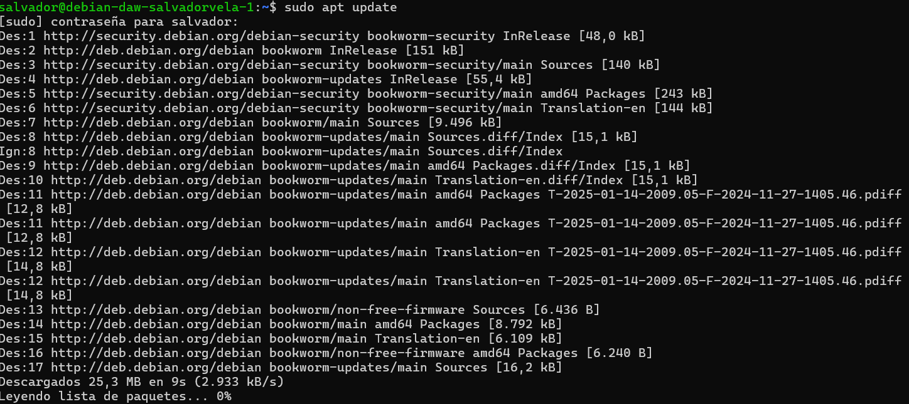
Luego, instalamos los paquetes necesarios para que APT use repositorios a través de HTTPS:
sudo apt install apt-transport-https ca-certificates curl gnupg lsb-release
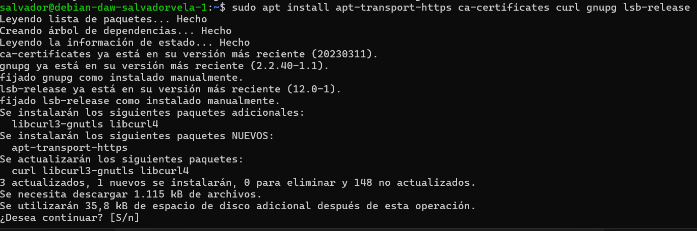
Añadimos la clave GPG oficial de Docker:
curl -fsSL https://download.docker.com/linux/debian/gpg | sudo gpg --dearmor -o /usr/share/keyrings/docker-archive-keyring.gpg
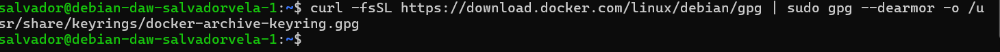
Añadimos el repositorio de Docker a APT:
echo "deb [arch=$(dpkg --print-architecture) signed-by=/usr/share/keyrings/docker-archive-keyring.gpg] https://download.docker.com/linux/debian $(lsb_release -cs) stable" | sudo tee /etc/apt/sources.list.d/docker.list > /dev/null
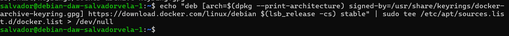
Actualizamos nuevamente la lista de paquetes:
sudo apt update
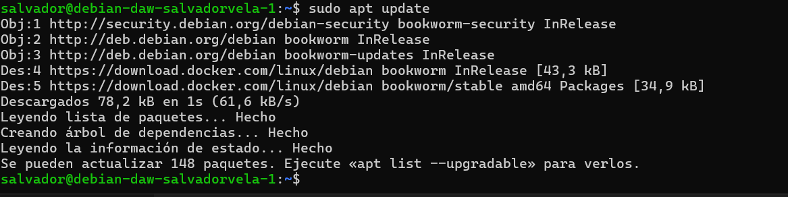
Instalamos Docker Engine:
sudo apt install docker-ce docker-ce-cli containerd.io
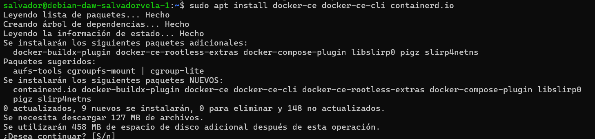
Para verificar si Docker está instalado correctamente, ejecutamos:
sudo docker run hello-world
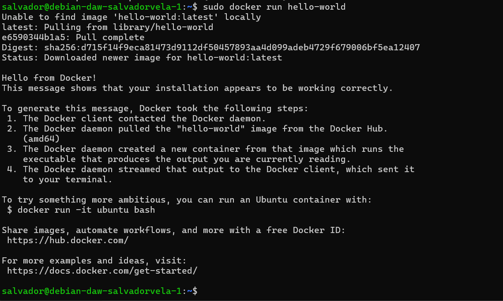
Docker Compose
Para instalar Docker Compose, descargamos una versión estable (en este caso, la 2.20.2):
sudo curl -SL https://github.com/docker/compose/releases/download/v2.20.2/docker-compose-linux-$(uname -m) -o /usr/local/bin/docker-compose
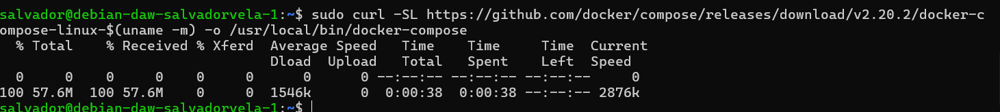
Le damos permisos ejecutables:
sudo chmod +x /usr/local/bin/docker-compose
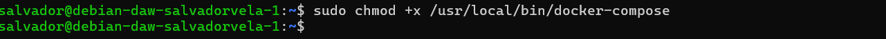
Verificamos si Docker Compose está instalado correctamente:
docker-compose --version
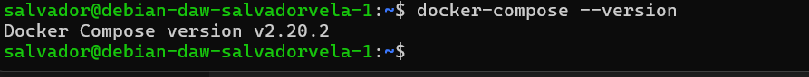
Despliegue con Docker
En primer lugar, si eliminastéis el repositorio en su momento, debéis volver a clonarlo en vuestra Debian, en caso contrario obviad este paso:
$ git clone https://github.com/raul-profesor/DAW_practica_6.1_2024.git
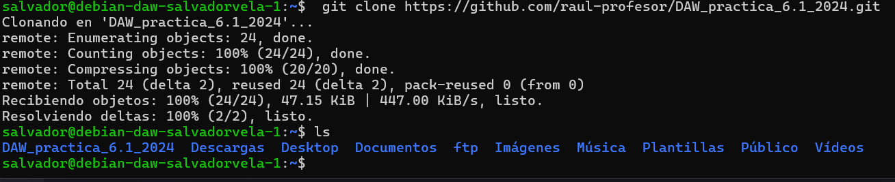
Ahora, puesto que la aplicación ya viene con el Dockerfile necesario dentro del directorio para construir la imagen y correr el contenedor, vamos a estudiar su contenido.
Tarea
Completa este Dockerfile con las opciones/directivas adecuadas, leed los comentarios y podéis apoyaros en la teoría, en este cheatsheet, en este otro o en cualquiera que encontréis. 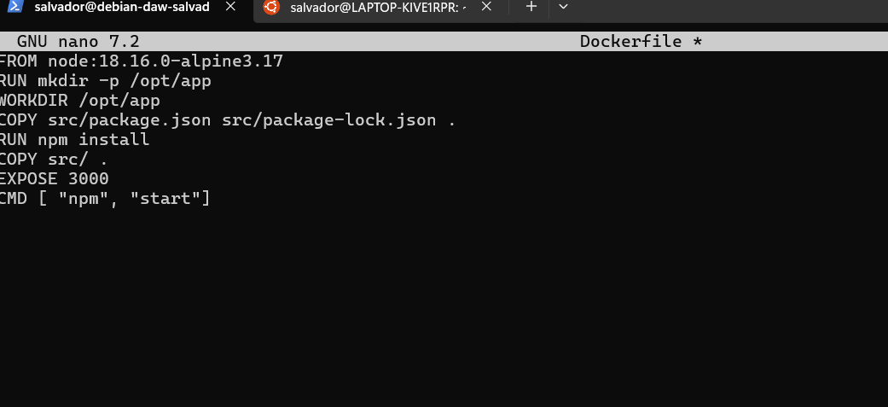
Así pues, tener nuestra aplicación corriendo es cuestión de un par de comandos.
Hacemos un build de la imagen de Docker. Le indicamos que ésta se llama librodirecciones y que haga el build con el contexto del directorio actual de trabajo, así como del Dockerfile que hay en él:
$ docker build -t librodirecciones .
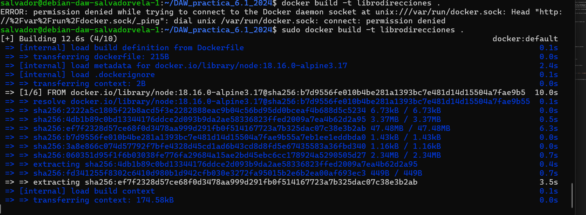
Y por último, iniciamos el contenedor con nuestra aplicación. Ahora sí, con la opción -p, le indicamos que escuche conexiones entrantes de cualquier máquina en el puerto 3000 de nuestra máquina anfitrión que haremos coincidir con el puerto 3000 del contenedor (-p 3000:3000). Y con la opción -d lo haremos correr en modo demonio, en background:
$ docker run -p 3000:3000 -d librodirecciones
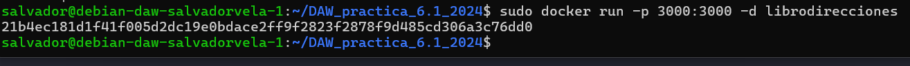
Tras esto sólo queda comprobar que al intentar acceder desde nuestra máquina a la aplicación: http://IP_Maq_Virtual:3000 se produce un error de conexión.
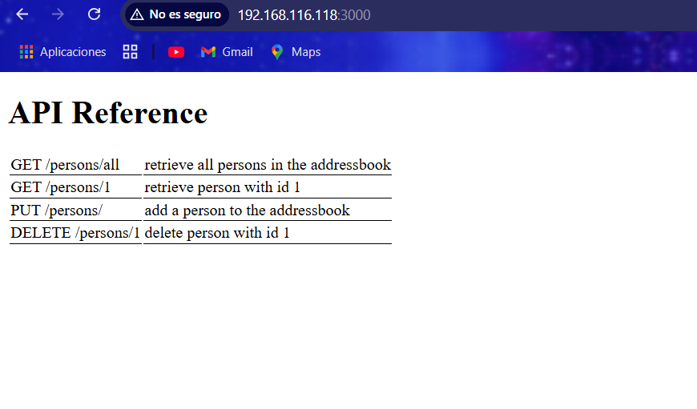
Esto sirve para ilustrar un punto importante de los contenedores: poseen su propia red. La aplicación, por defecto, intenta buscar la base de datos en nuestro localhost pero, técnicamente, está en otro host (su contenedor).
A pesar de que todos los contenedores corren en la misma máquina, cada uno es considerado un host diferente y por eso la aplicación falla al conectar.
Podríamos utilizar los comandos network de Docker para solucionar el asunto. En lugar de eso, introduciremos el concepto de Docker Compose para administrar contenedores.
Docker Compose
Docker Compose es una herramienta para gestionar aplicaciones multicontenedor. En Linux tiene que ser instalado por separado, consultad su documentación para ello.
Docker Compose puede:
- Iniciar y detener múltiples contenedores en secuencia.
- Conectar contenedores utilizando una red virtual.
- Manejar la persistencia de datos usando Docker Volumes.
- Establecer variables de entorno.
- Construir o descargar imágenes de contenedores según sea necesario.
Docker Compose utiliza un archivo de definición YAML para describir toda la aplicación. En nuestro caso:
version: "3.9"
services:
postgres:
image: postgres:latest
environment:
POSTGRES_USER: postgres
POSTGRES_PASSWORD: postgres
ports:
- '5432:5432'
volumes:
- addressbook-db:/var/lib/postgresql/data
addressbook:
build:
context: .
environment:
DB_SCHEMA: postgres
DB_USER: postgres
DB_PASSWORD: postgres
DB_HOST: postgres
depends_on:
- postgres
ports:
- '3000:3000'
volumes:
addressbook-db:
Así las cosas, para levantar nuestra infraestructura basada en contenedores no tenemos más que hacer:
$ docker compose run addressbook npm run migrate
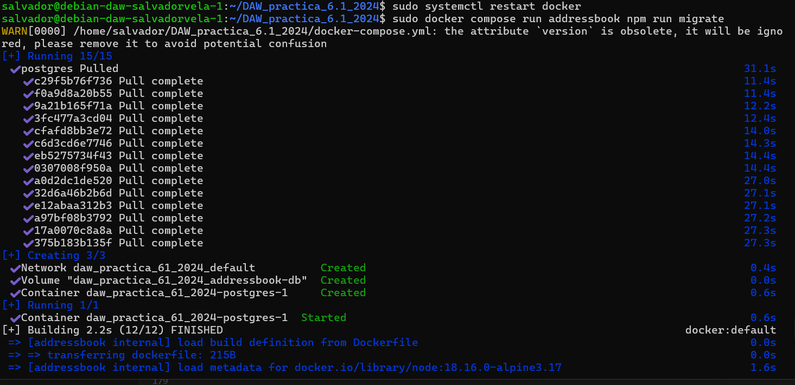 Esto creará las tablas necesarias en la base de datos.
Y construiremos nuestros contenedores a partir de las imágenes:
$ docker compose up --build -d
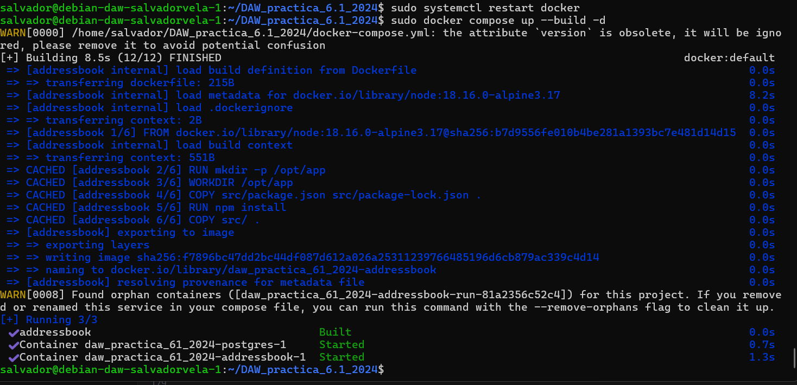 Una vez construidas las imágenes, podemos levantar los contenedores:
Podéis correr unos tests para comprobar que la aplicación funciona correctamente con:
$ docker compose run addressbook npm test
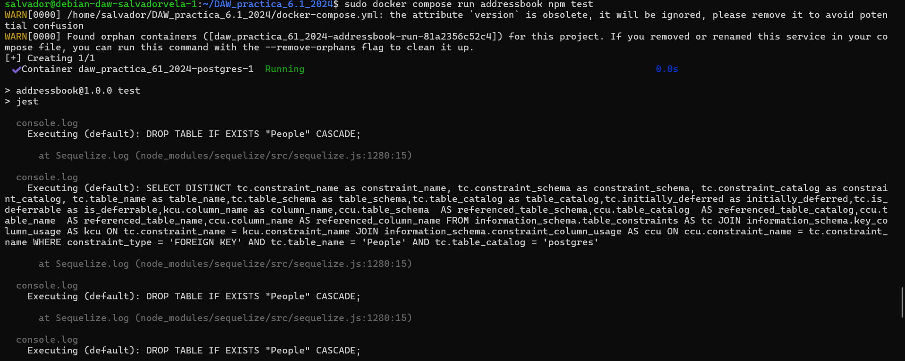
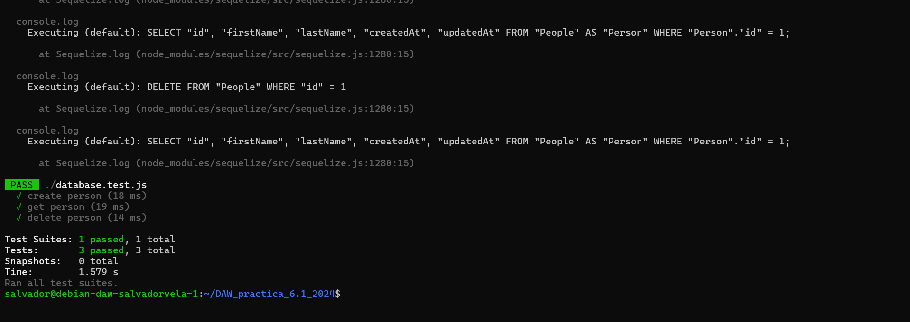
Tarea
Probad que la aplicación junto con la BBDD funciona correctamente. El funcionamiento de la API es:
GET /persons/allmuestra todas las personas en el libro de direccionesGET /persons/1muestra la persona con el id 1PUT /persons/añade una persona al libro de direccionesDELETE /persons/1elimina a la persona con el id 1
Ejemplos:
curl -X PUT http://IP_APLICACION:3000/persons -H 'Content-Type: application/json' -d '{"id": 1, "firstName": "Raúl", "lastName": "Profesor"}'
curl -X GET http://localhost:3000/persons -H 'Content-Type: application/json'
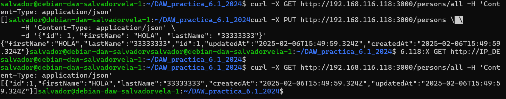